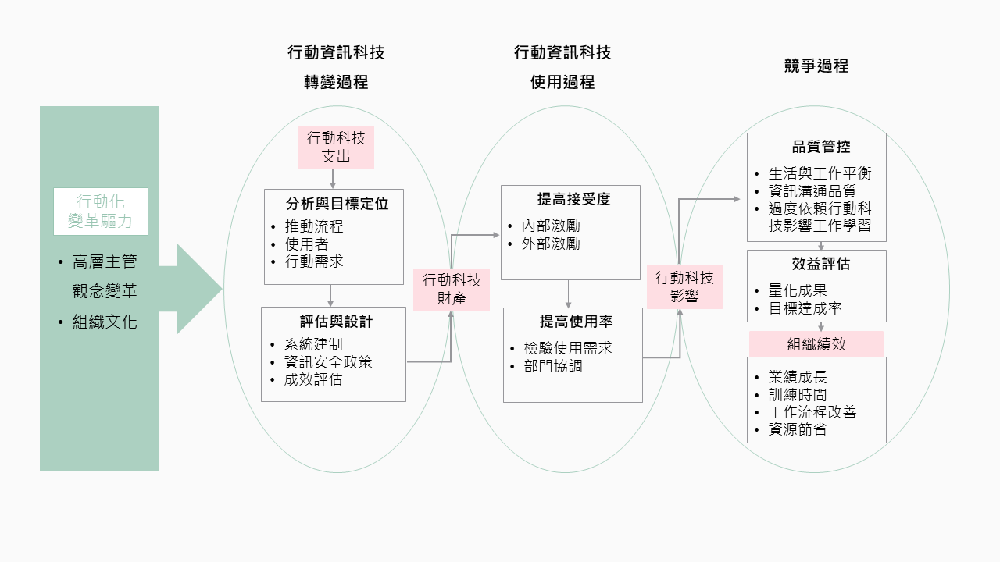

Works
Mobile Enterprise
企業行動化之導入策略與組織績效影響研究
Portfolio
Story Backgroud
隨著行動科技的普及與相關應用程式與系統發展越趨完備，許多國外企業皆積極投入推動企業內部的行動應用，並期待智慧型手機與平板電腦將能輔助員工提升工作績效。為了瞭解企業採取行動化的原因、執行策略，以及行動化組織績效，本研究專案選取國內12家行動化企業，邀請其負責推動行動化的主管進行焦點團體訪談。期望藉由此研究專案，能為預採用創新科技於工作環境之企業，提供完整的導入模式參考。
※此研究計畫由岳修平教授主持，受科技部專題研究計畫（NSC100-2628-S-002-001-MY3、NSC 103-2628-S-002-002）補助。研究結果已在2016年發表於圖書資訊學刊第15卷第1期。
My Role
在此研究專案中我擔任專案研究助理，招募於企業內部負責行動化政策的主管參與焦點團體訪談。同時我也負責焦點團體訪談資料的收集與分析、撰寫研究結果報告與投稿出版研究結果。在此專案中我學習到獨立籌畫焦點團體訪談研究的能力，以及與業界受訪者、學界協助者溝通合作的技巧。在資料分析上，我學習到如何分析訪談資料，並以量化方式確認質化資料的信度。在研究報告的撰寫上，我學習到富有邏輯的書寫脈絡。
The Challenge
業界主管好忙，有人會理我嗎？
- 1. 利用現有調查資訊鎖定合適企業
參考2003年至2009年間，通過國家型數位學習計畫補助建置企學網之企業，與天下雜誌所調查出之臺灣前兩千大企業等為受訪企業抽樣參考依據，選出已導入行動科技（智慧型手機、平板電腦）於員工學習、訓練與績效支援，且屬於製造業、金融業與服務業的企業。
- 2. 搜尋人脈關係，滾雪球式招募
除了直接通話聯繫企業主管，也透過自己與計畫主持人之人脈推廣招募訊息。不論企業主管是否接受受訪招募，接請其推薦合適人選，透過間接人脈招募更多受訪者。
資料分析角度定錨與洞察
在設計訪談大綱與訪談資料分析時，研究人員必須先建立目標與定位視角。藉此進一步深化洞察結果。本專案透過蒐集與分析企業報告、應用型企業研究結果，建立資料觀察與分析架構。
讓質化資料提升客觀性
質化研究時常受到客觀性質疑，為解決此問題，本專案透過量化分析方法，加強研究信度，提升資料分析結果的客觀性。
The Approach
站在巨人的肩膀上定位資料洞察視角：行動資訊科技商業價值創造模式。
本專案蒐集與分析管理學領域應用型研究報告，以A Model For Mobile IT Business Value Creation為資料建立與分析之基礎架構。再整合其他企業報告研究結果，提出修改版架構。
焦點團體訪談
共分兩場次進行，第一場包含5家企業，第二場包含7家企業。

資料分析工具與方法
為使訪談資料有一致的分析表準，專案中發展出行動科技導入程度之評量規準表（Rubrics），並透具備資訊學與人機互動專業背景之研究人員共同分析資料，提高研究者內信度。進一步再透過Kendall和諧係數分析資料信度與分類各受訪企業行動化程度。
The Discovery
企業行動化目的與關鍵因素
- 中度至高度行動化程度的企業多為大型企業，組織分層架構與階層管理較為複雜，更注重行動化推動前的氣氛營造，評估最大的影響範圍，讓受影響的相關員工知道行動化之需求和迫切性，以及推動之歷程設計規劃與執行。
低行動化程度之中小企業中，組織成員互動較密切，但缺乏整體員工追求創新的組織文化，因此推動行動化的領導者需強化控制管理的決策風格以提高行動化的效率。
行動化的科技轉變過程
組織行動化的推動流程將是後續策略規劃的重要影響因素。目前在中度至高度行動化企業的行動化，多由高層領導者啟動及決策，且由管理部門統籌；而低行動化的中小企業（L、K），由行動化領導者以控制管理的方式推動行動化。
中度至高度行動化之受訪企業對於行動化系統建置、資安政策與預期成效評估，皆有較完善的執行規劃；但預期成果的評估僅能將減少的營運成本以量化方式呈現，而低行動化之中小型企業則無任何成果預測之評估標準。
行動資訊科技使用過程
中度至高度行動化的企業為使員工接受使用行動科技於工作輔助，透過制訂多種補助措施、強化溝通以及舉辦創新競賽以增加員工對於組織行動化的認同與參與感。
行動科技是否能確實輔助員工完成工作任務是提高使用率的關鍵，但低行動化企業卻無相關策略規劃。
競爭過程
影響行動化成果在轉化為組織績效的過程中，企業必須面對的問題，包含員工的生活與工作平衡、資訊溝通量過多，與過度依賴行動科技影響工作學習。這些問題企業目前並未提出具體且有效的對策，而這些問題將影響員工對於行動化的認同與滿意度，進而影響行動化目標的達成與否。
不同行動化程度企業之行動化組織績效
企業行動化所帶來的組織績效，除了反映在資訊溝通的改善，另外也縮短了工作訓練時間、節省資料儲存空間與通話費用，降低企業營運成本。
The Vision
成功的行動化導入必須通盤性規劃搭配滾動式管理
- 建立行動化目標與執行架構
- 賦權於員工並鼓勵員工向上管理，一同達成組織目標
- 搭配形成性與總結性評估，掌握行動化進程與方向
- 持續性的組織文化再塑
The Suggestions
行動化驅力
建議企業在行動資訊科技轉變過程應納入中階經理之意見，並讓基層員工感受到自己也能參與行動化推動歷程與決策，以提高行動化成功的可能性。
行動化的科技轉變過程
建議低行動化企業可參考中度與高度行動化企業在系統建置、資安政策與預期成效評估等的策略規劃，幫助組織在不同階段查核行動化成效，以利組織持續推動創新、再造及培養變革導向的組織文化。
行動資訊科技使用過程
建議企業在行動資訊科技使用階段的行動化策略規劃，應加強員工了解行動科技輔助工作任務的相關知識與技能，並建構可以有效運作的反饋系統，了解員工對於使用行動科技的預期績效，以改善行動科技的任務適配度，透過員工個人的工作績效優化，達到工作流程改善之目的。
競爭過程
建議企業加強員工訓練與溝通，使員工理解行動科技在工作環境中的使用規範，以及如何使用行動科技於工作上的溝通與學習才能提高個人工作效率。
行動化組織績效
- 建議企業未來在持續推動行動化時，能在行動資訊科技轉變階段時，將這些效益轉換為成效評估項目，以提高行動化效率。
Impact
發表於高影響力期刊
圖書資訊學刊為科技部人文及社會科學研究發展司所列圖資學門之第一級期刊，並於2017年被評定為臺灣社會科學核心期刊（TSSCI）。本研究專案結果已公開於期刊網站，供相關單位參考。[PDF]
審查委員高度評價
- 「研究論題亟具重要性及啟發性。」
「分析內容相當詳實豐富，行文流暢亦增加文章可讀性。」